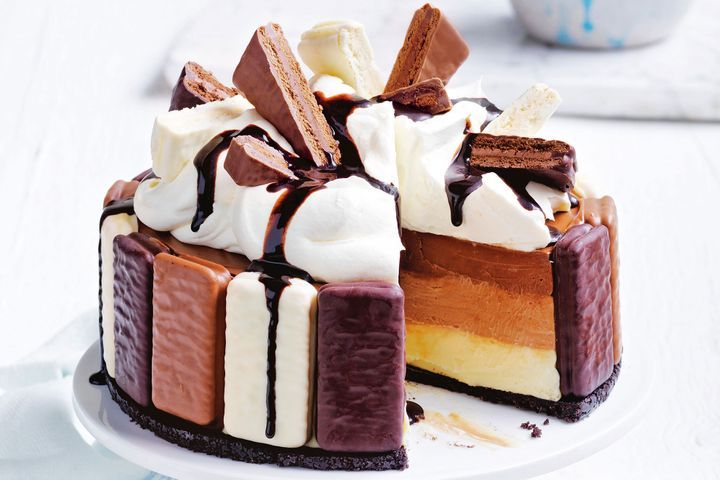

No-bake Tim Tam cheesecake

Ingredients
- 137g pkt Oreo Original biscuits
- 50g butter, melted
- 6 Arnott’s Tim Tam White biscuits
- 6 Arnott’s Tim Tam Original biscuits
- 6 Arnott’s Tim Tam Dark Chocolate biscuits
- 750g cream cheese, softened
- 1 1/2 cups (375ml) thickened cream
- 3/4 cup (165g) caster sugar
- 200g white chocolate, chopped, melted
- 1/4 cup (60ml) boiling water
- 3 tsp gelatine powder
- 200g milk chocolate, chopped, melted
- 200g dark chocolate, chopped, melted
- Thickened cream, whipped, to serve
- Arnott’s Tim Tam biscuits, extra, chopped, to serve
- Arnott’s Bites Tim Tam Original, chopped, to serve
- Chocolate fudge topping, to serve
Procedure
- Grease and line the base and side of a 20cm round (base measurement) springform pan with baking paper. Place Oreo biscuits in a food processor and process until finely crushed. Add the butter and process until well combined. Spoon into the prepared pan and press over the base. Place in the fridge for 30 mins or until firm
- Arrange combined Tim Tam biscuits, in alternating colours, around the side of the pan. Return to the fridge.
- Place one-third of the cream cheese, one-third of the cream and one-third of the sugar in a clean food processor. Process until smooth. Add white chocolate and process until smooth. Place 1 tablespoon boiling water in a small cup. Sprinkle over 1 teaspoon of the gelatine. Stir until gelatine dissolves. Add to the cream cheese mixture and process until combined. Pour into the prepared pan and smooth the surface. Place in the fridge for 1 hour until just set.
- Place half the remaining cream cheese, cream and sugar in a clean food processor. Process until smooth. Add milk chocolate and process until smooth. Place 1 tablespoon boiling water in a small cup. Sprinkle over 1 teaspoon of the remaining gelatine. Stir until gelatine dissolves. Add to cream cheese mixture and process until combined. Pour over white chocolate layer in the pan and smooth the surface. Place in the fridge for 1 hour or until just set.
- Repeat with remaining cream cheese, cream and sugar, dark chocolate and the remaining boiling water and gelatine. Pour over the milk chocolate layer in the pan. Smooth the surface. Place in the fridge for 3 hours or until completely set.
- Place on a serving platter. Top with cream. Decorate with chopped biscuit. Drizzle with chocolate fudge topping.